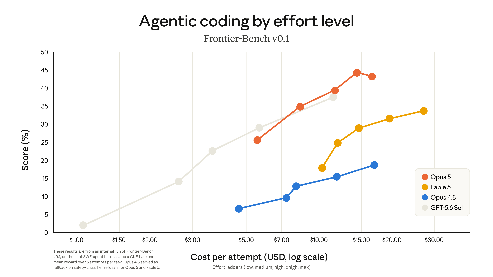

클로드 오퍼스 5 출시 — 소네트 5·오퍼스 4.8과 가격 비교 (Claude Opus 5)
오퍼스 5 나왔다는데 소네트 5랑 뭐가 다른가요, 가격은 얼마인가요 — 요즘 이 두 질문을 나란히 받아요. 짧게 답하면 오퍼스 5(Claude Opus 5)는 API 기준 입력 100만 토큰당 5달러·출력 100만 토큰당 25달러이고, 오퍼스 4.8과 가격이 완전히 같아요. 소네트 5(Claude Sonnet 5)는 입력 3달러·출력 15달러로 더 낮은 가격대예요.
오퍼스 5는 앤스로픽이 2026년 7월 24일 공식 발표한 새 모델이에요. 이 글은 오퍼스 5의 출시 소식과 오퍼스 4.8·소네트 5 대비 가격·배치 차이를 API 토큰 단가 중심으로 정리했어요. 개인 구독 요금제(무료·프로·맥스)의 월 가격은 여기서 다루지 않으니, 그 내용이 궁금하면 클로드 사용법 총정리 글을 참고해 주세요.
오퍼스 5, 언제 어떤 자리로 나왔나요
오퍼스 5는 2026년 7월 24일 앤스로픽 공식 발표로 나왔고, API 모델 ID는 claude-opus-5예요.
공식 발표는 오퍼스 5의 자리를 이렇게 설명해요. "It's the new default model on Claude Max, and the strongest model on Claude Pro." 우리말로 옮기면 클로드 맥스에서는 기본 모델로, 클로드 프로에서는 최상위 모델로 배치됐다는 뜻이에요. (앤스로픽 공식 발표, 2026.07.24 게재)
여기서 말하는 클로드 맥스·클로드 프로는 API 요금이 아니라 claude.ai 개인 구독 플랜 안에서 어떤 모델을 기본·최상위로 쓰느냐를 가리키는 표현이에요. 이 글은 그 아래에서 실제로 과금되는 API 토큰 단가를 중심으로 다뤄요.
앤스로픽 공식 발표 페이지에 실린 오퍼스 5 발표 대표 이미지예요.
이미지 출처: anthropic.com/news/claude-opus-5 · 네이버 본문엔 받아서 재업로드 권장
오퍼스 5, 오퍼스 4.8·소네트 5랑 가격이 어떻게 다른가요
오퍼스 4.8과는 API 가격이 완전히 같고, 소네트 5보다는 비싸요. 오퍼스 5와 오퍼스 4.8은 둘 다 입력 100만 토큰당 5달러·출력 100만 토큰당 25달러예요.
공식 발표 원문은 이 가격을 이렇게 적었어요. "$5 per million input tokens and $25 per million output tokens (the same as Opus 4.8)" 오퍼스 4.8과 같은 가격이라고 공식적으로 밝힌 문장이에요.
| 모델 | 토큰당 가격(입력/출력, 백만 토큰당) | 배치 |
|---|---|---|
| 오퍼스 5 | $5 / $25 | Claude Max 기본모델·Claude Pro 최상위모델 |
| 오퍼스 4.8 | $5 / $25 | 오퍼스 5와 가격 동일 |
| 소네트 5 | $3 / $15 | — |
| 소네트 5 도입가(~2026.08.31) | $2 / $10 | 기간 한정 도입 특가 |
소네트 5는 정가가 입력 3달러·출력 15달러지만, 2026년 8월 31일까지는 입력 2달러·출력 10달러 도입가가 적용돼요. API 모델 ID는 오퍼스 5가 claude-opus-5, 소네트 5가 claude-sonnet-5예요.
오퍼스 5, 벤치마크 성능은 어떤가요
공식 발표에 따르면 오퍼스 5는 코딩 계열 벤치마크인 Frontier-Bench v0.1과 지식작업 계열 벤치마크인 GDPval-AA v2에서 새 최고 성능을 기록했어요.
Frontier-Bench v0.1은 코딩 작업을, GDPval-AA v2는 문서·리서치 같은 지식노동 작업을 평가하는 벤치마크예요. 둘 다 처음 듣는 이름일 수 있어 공식 발표에 적힌 이름과 버전을 그대로 옮겼어요.

앤스로픽 공식 발표 페이지에 실린 Frontier-Bench v0.1 코딩 벤치마크 그래프예요. 오퍼스 5 라인이 오퍼스 4.8 라인보다 위쪽에 그려져 있어요.
이미지 출처: anthropic.com/news/claude-opus-5 · 네이버 본문엔 받아서 재업로드 권장
자주 묻는 질문
Q. 오퍼스 5, 오퍼스 4.8에서 넘어가면 비용이 오르나요?
아니요. API 가격이 오퍼스 4.8과 완전히 같아서(입력 5달러·출력 25달러, 백만 토큰당) 모델 ID만 claude-opus-5로 바꾸면 비용 부담 없이 넘어갈 수 있어요.
Q. 소네트 5 도입가는 언제까지 적용되나요?
2026년 8월 31일까지예요. 그 전까지는 입력 100만 토큰당 2달러·출력 100만 토큰당 10달러로 쓸 수 있고, 이후엔 정가인 입력 3달러·출력 15달러로 바뀌어요.
참고한 곳
· 앤스로픽 공식 발표 — Claude Opus 5
· Claude 공식 모델 개요·가격 페이지
✔ 같이 보면 좋아요
· 클로드 사용법 총정리 — 접속부터 초기 설정, 무료·프로 차이까지
하루 정리
· 오퍼스 5는 2026년 7월 24일 나왔고, 클로드 맥스 기본모델·클로드 프로 최상위모델로 배치됐어요
· 오퍼스 5·오퍼스 4.8은 API 가격이 입력 5달러·출력 25달러로 같아요
· 소네트 5는 입력 3달러·출력 15달러로 더 낮고, 8월 31일까지는 도입가 2달러·10달러가 적용돼요
· 코딩은 Frontier-Bench v0.1, 지식작업은 GDPval-AA v2에서 새 최고 성능이라고 공식이 밝혔어요
지금 오퍼스 4.8을 쓰고 있다면 그대로 오퍼스 5로 바꿔도 되고, 예산을 낮추고 싶다면 소네트 5를 함께 검토해 보세요.